한 문장 프롬프트로 만든 첫 영상
Opus 5.5가 나온 뒤로 도형과 글자가 화려하게 움직이는 모션 그래픽 영상이 여기저기 올라오기 시작했어요. 편집 도구를 쓴 것도, 전문 기술이 필요한 것도 아니에요. 클로드에게 말로 부탁해서 코드로만 만든 영상이에요. 발표자는 한 문장 프롬프트, 잘 짜인 긴 프롬프트, 그걸 응용한 자기 채널 영상 순서로 직접 만들어 보여 줘요.
시작은 영어 한 문장이었어요
아래 화면은 Claude Code 데스크톱 앱이에요. 아래쪽 입력창에 들어간 문장이 요즘 유행한 바로 그 프롬프트예요. '이력서에 붙일 쇼릴처럼, 네가 얼마나 대단한 모션 디자이너인지 보여 주는 15초짜리 역동적인 모션 그래픽 영상을 만들어 줘. 최선을 다해서'라는 뜻이에요. 발표자는 이 문장을 영어로 넣어도, 한국어로 옮겨 넣어도 괜찮다고 해요.
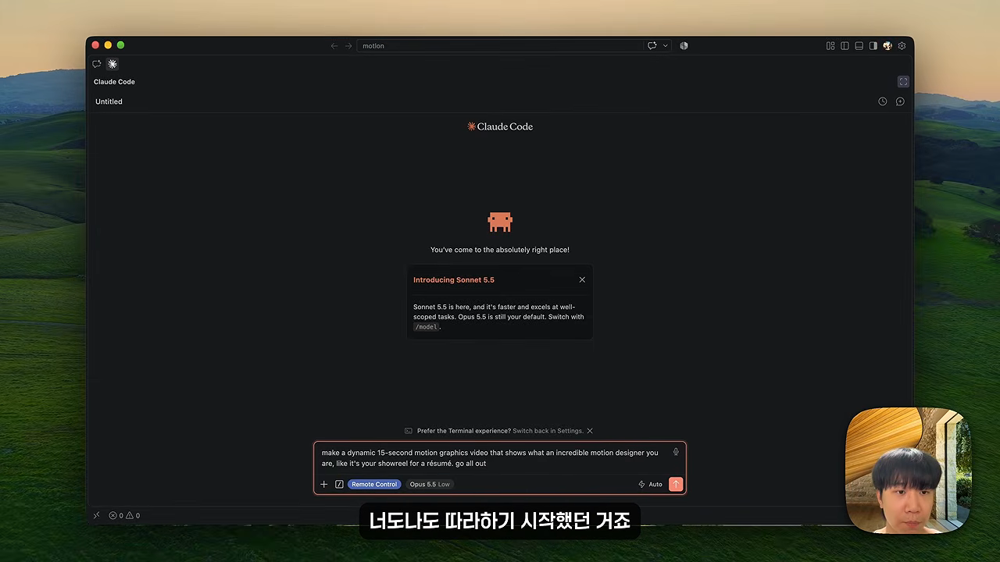
15초짜리 쇼릴이 나왔어요
결과물은 장면이 번호를 달고 이어지는 15초 영상이에요. 첫 번째 장면은 수천 개의 입자가 소용돌이치는 '05 / FLOW'예요. 화면 네 귀퉁이에 'CLAUDE — MOTION REEL 2026', 타임코드, '128 BPM' 같은 표기까지 들어가 있어요.
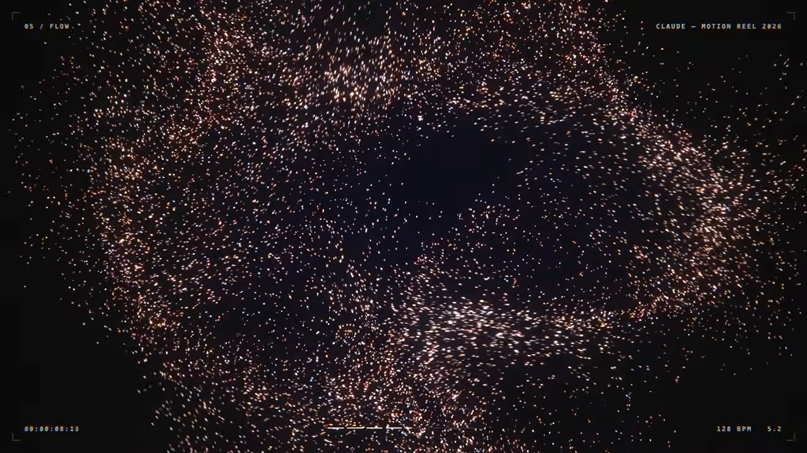
다음 장면 '03 / SHAPE'에서는 원, 사각형, 십자, 삼각형이 격자로 늘어서서 리듬에 맞춰 움직여요. 플레이어 아래 진행 바를 보면 영상 길이가 정확히 0:15예요. 발표자가 더 놀란 건 배경 음악까지 직접 만들어 넣었다는 점이에요.
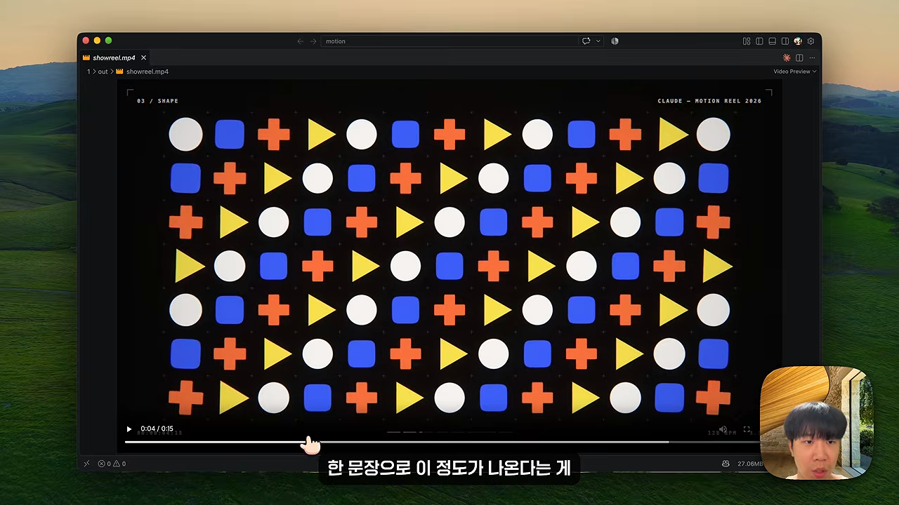
예전엔 도구 몇 개를 엮어야 했어요
발표자는 자기 영상에 넣는 모션 그래픽을 원래 Remotion이나 HyperFrames 같은 외부 도구를 설치하고, 여러 스킬을 붙여서 만들었다고 해요. 아래 장면이 그 조합을 보여 줘요. 이제는 이런 준비 없이 클로드 하나로 된다는 게 이 영상의 출발점이에요.
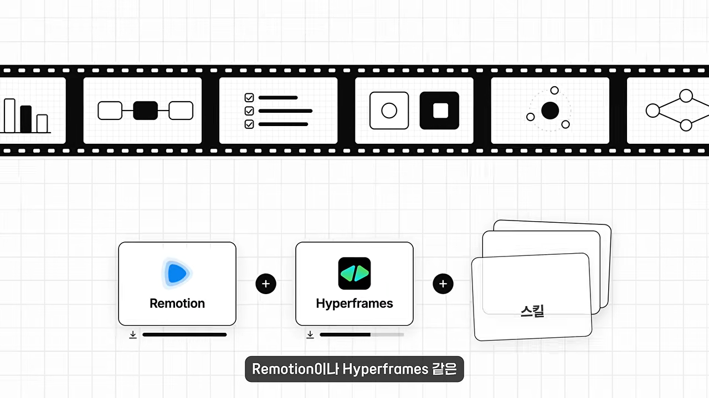
한 문장으론 부족해요: 네 덩어리로 짠 프롬프트
한 문장 영상은 분명 대단하지만, 발표자는 한계도 분명하다고 말해요. 돌릴 때마다 결과가 달라지고, 보여 주기용으로는 멋져도 내가 원하는 영상은 아니라는 거예요.
방향을 안 주면 기본 스타일로 돌아가요
근거로 든 건 Anthropic의 'Claude Opus 5.5 프롬프팅' 문서예요. 오른쪽 목차 맨 아래 '프론트엔드 디자인 기본값' 항목이 그 이야기예요. 디자인 방향을 따로 주지 않으면 Opus가 늘 쓰던 기본 스타일로 돌아간다는 내용이에요. 그래서 원하는 스타일을 구체적으로 정하거나, 쓰지 말아야 할 것을 분명하게 적어 줘야 해요.

긴 프롬프트는 네 덩어리예요
그래서 두 번째로 준비한 건 한 문장이 아니라 훨씬 길고 구체적인 프롬프트예요. 화면에 나온 원문은 <inputs>, <direction>, <structure>, <build> 네 태그로 나뉘어 있어요. 발표자는 앞의 세 덩어리를 사람이 정하는 부분으로, 마지막 구현은 클로드가 읽을 부분으로 설명해요.
재료부터 물어보게 해요
첫 덩어리는 재료예요. 오른쪽 카드의 '장면? 색? 음악?' 세 줄처럼, 클로드가 만들기 전에 사용자에게 이것부터 묻게 해요. 왼쪽 원문에는 버튼, 커맨드 팔레트, 토스트 같은 예시 장면과 저작권 걱정 없는 음악을 달라는 문장이 보여요.
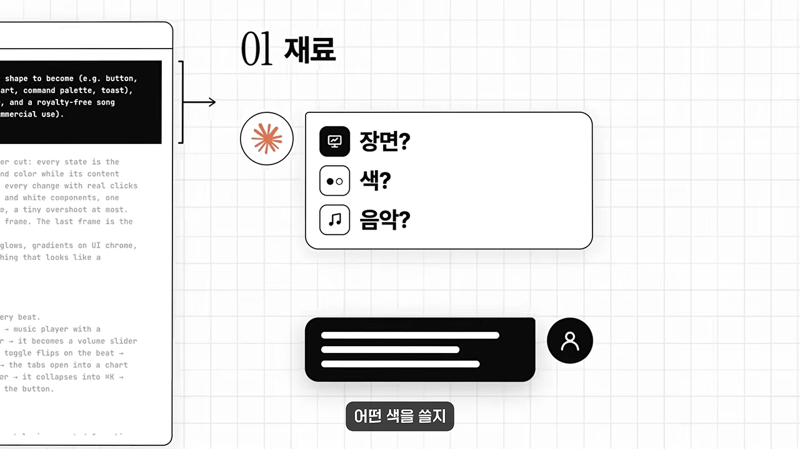
핵심은 금지 목록이에요
두 번째 덩어리 <direction>에는 어떤 느낌의 영상인지, 화면이 어떻게 이어지는지가 들어가요. '도형 하나가 끊기지 않고 크기·모서리·색을 바꿔 가며 모든 상태가 된다', '커서가 실제 클릭과 드래그로 변화를 이끈다', '마지막 프레임이 첫 프레임이라 반복 재생된다' 같은 문장이에요. 그 아래 'Banned:' 줄이 발표자가 가장 중요하다고 짚은 금지 목록이에요. 통통 튀는 이징, 입자 폭발, 글로우, UI(User Interface) 테두리의 그라데이션, 굵기가 안 맞는 아이콘, 멈춰 있는 시간, 그리고 템플릿처럼 보이는 모든 것을 막아요.

같은 화면 아래쪽 <structure>가 세 번째 덩어리예요. '120 BPM, 7마디, 박자마다 무언가 일어난다'고 정한 뒤, 버튼 → 로더 → 체크 → 다이내믹 아일랜드 → 뮤직 플레이어 → … → 토스트 → 다시 버튼으로 이어지는 장면 순서를 화살표로 적어 둬요.
구현은 클로드가 읽을 부분이에요
마지막 <build>는 일곱 줄짜리 구현 지시예요. 1440×1440 정사각형 HTML 파일 하나로 만들고, 모든 스타일을 시간 t에서 계산하라고 해요. 움직임은 스프링으로, 음악은 numpy로 박자를 분석해 맞추고, Playwright로 60fps 렌더링하라는 내용도 있어요. 발표자는 이 부분은 자세히 몰라도 괜찮다고 해요.
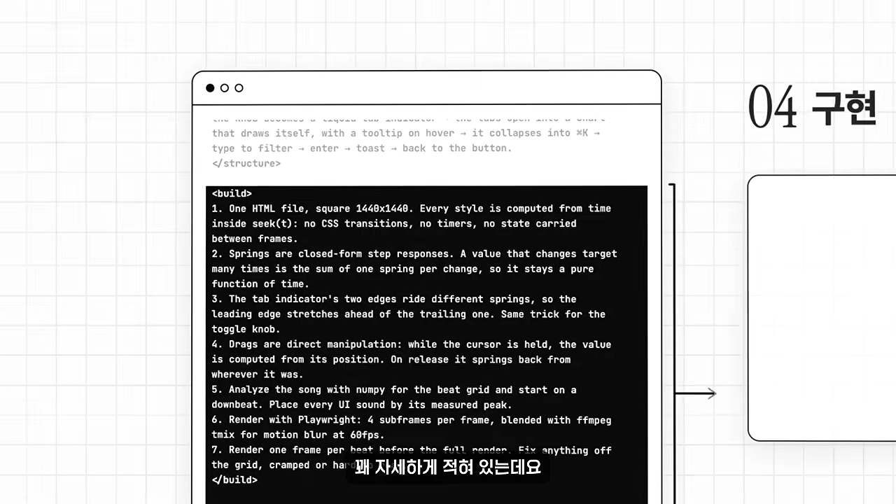
발표자의 정리를 표로 옮기면 이래요.
| 한 문장 프롬프트 | 구조화한 프롬프트 | |
|---|---|---|
| 클로드에게 주는 것 | '알아서 해 봐' | 원하는 걸 하나부터 열까지 |
| 결과 | 돌릴 때마다 달라요 | 정한 화면이 정한 순서대로 나와요 |
| 어울리는 쓰임 | 보여 주기용 | 원하는 영상이 따로 있을 때 |
| 고쳐 쓰기 | 문장 하나라 고칠 곳이 없어요 | 입맛에 맞게 고쳐 쓸 수 있어요 |
질문하고, 계획하고, 만들어요
이제 실제로 돌려 볼 차례예요. 발표자는 시간 관계상 effort를 medium으로 두고 진행했지만, 되도록 max로 돌리기를 권해요. 이 프롬프트로 돌리면 클로드가 곧바로 코드를 짜지 않아요. 아래처럼 두 번 멈춰서 사람의 확인을 받아요.
flowchart LR A["프롬프트 붙여 넣기"] --> B["클로드가 장면·색·음악 질문"] B --> C["사람이 답하기"] C --> D["박자별 계획표"] D -->|"순서 바꾸기·빼기"| C D --> E["코드 작성·렌더링"] E --> F["완성 영상"]
먼저 질문에 답해요
프롬프트를 넣자 클로드가 장면·색·음악을 물었어요. 위쪽 클로드의 제안에는 오렌지(#FF5B1F)와 블루(#3B5BFF)를 체크, '토글 ON', 차트 선, 진행 바에만 쓰겠다는 내용이 보여요. 발표자는 입력창에 세 줄로 답했어요. 화면은 예시 그대로, 색은 최소한으로 미니멀하게, 음악은 알아서 아무거나요.
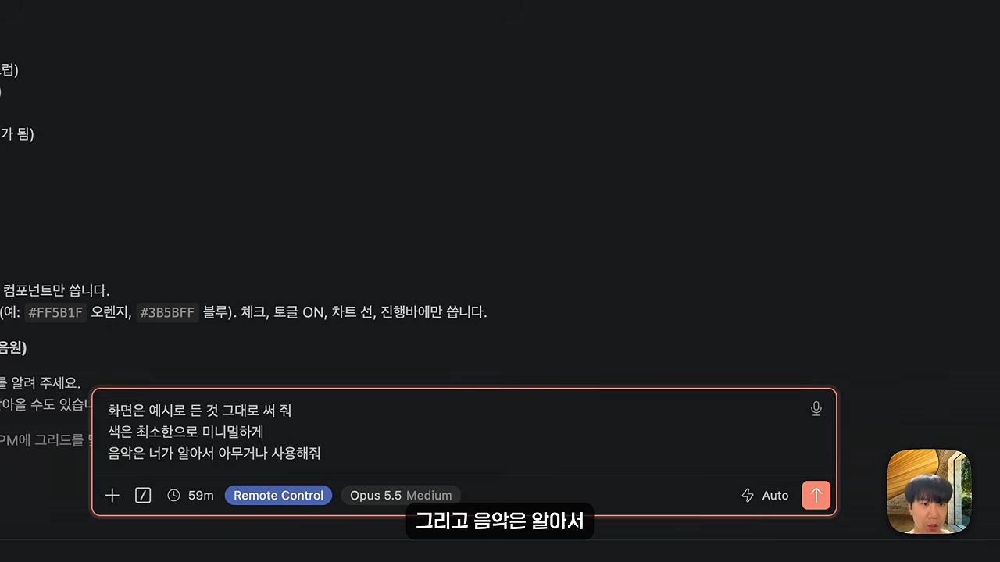
계획표를 보고 고쳐요
답을 받은 클로드는 이번에도 바로 만들지 않고 계획표를 보여 줘요. 0.5초 간격으로 줄이 나뉘고, 줄마다 화면에서 일어날 일과 커서 동작이 짝지어 있어요. '버튼 Continue' → '버튼이 눌려서 살짝 줄어듦(클릭)' → '로더' → '체크' → '다이내믹 아일랜드' → '뮤직 플레이어' 순서예요. 마음에 안 드는 장면이 있으면 여기서 순서를 바꾸거나 빼면 돼요. 발표자는 그대로 진행했어요.

한 도형이 계속 모양을 바꾸는 영상
완성된 one-shape.mp4는 14초짜리예요. 연한 회색 바탕 가운데 'Connect' 버튼 하나에서 시작해요. 프롬프트대로 화면이 끊기지 않고, 이 버튼 하나가 계속 다른 UI로 변해요.
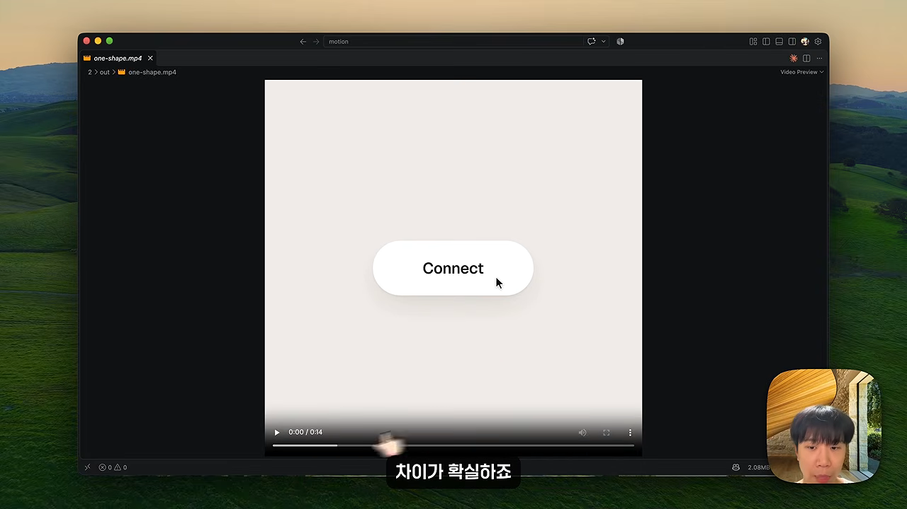
11초 무렵에는 같은 도형이 ⌘K 검색창으로 바뀌어 있어요. 'sh'를 치자 Share track, Shuffle이 걸러져 나와요. 계획표 끝부분 '카드가 ⌘K 팔레트로 접힘'이 그대로 구현된 장면이에요. 발표자는 한 문장 영상과 비교하면 차이가 확실하다고 해요. 자기가 정한 화면이 원한 순서대로 움직이고, 버튼이나 음악 플레이어 같은 효과도 자연스럽다는 거예요.

애플 스타일 영상 'Slowlife'
세 번째로 발표자는 한 단계 더 나아가 애플 스타일의 출시 영상을 만들어요. 전체 구조는 앞의 프롬프트와 같고, 요구 사항이 좀 더 많아요.
이번엔 네 가지 재료를 물어요
대화 제목은 'Apple keynote launch film'이에요. 클로드는 작업 환경을 먼저 확인한 뒤 필요한 재료 네 가지를 번호를 매겨 물어요. 1번 브랜드 이름은 워드마크에 쓸 영어 단어 하나인데, Hang, Frame, Keep, Mount 같은 동사가 좋대요. 2번은 고해상도 사진 9~12장, 3번은 120 BPM(Beats Per Minute) 전후에 드롭과 조용한 브레이크다운이 있는 곡, 4번은 무지 벽에 식물 그림자가 움직이는 영상이에요. 마지막 줄에는 재료가 준비되면 박자 지도와 스틸 4장부터 보여 주고, 확인을 받은 뒤 전체 영상을 만들겠다고 적혀 있어요.
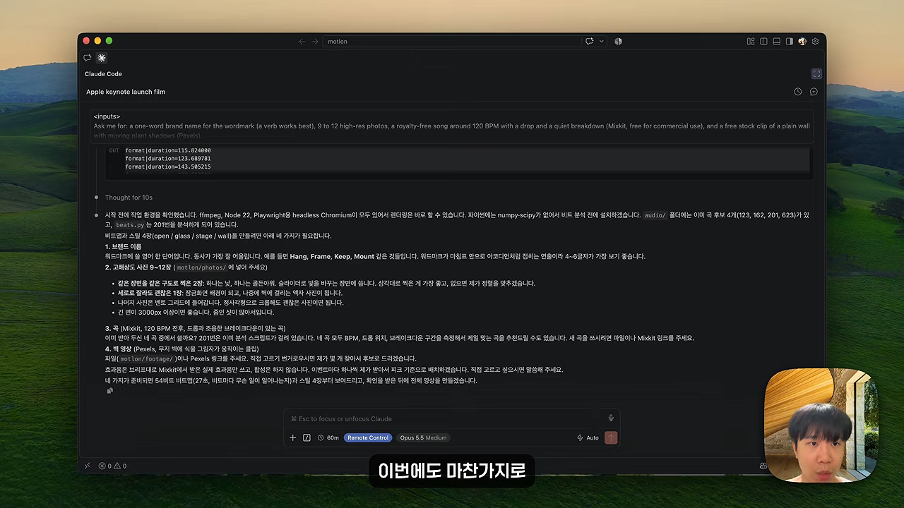
발표자는 브랜드 이름을 Slowlife로 정하고, 사진과 음악은 알아서 써 달라고만 답했어요.
사진과 UI가 섞인 결과물
결과 영상에는 사진 위를 반투명 슬라이더가 지나가는 장면이 나와요. 아래 화면에서 산과 항구 사진 아래쪽에 유리 같은 막대가 겹쳐 있고, 커서가 그 위를 끌고 있어요.
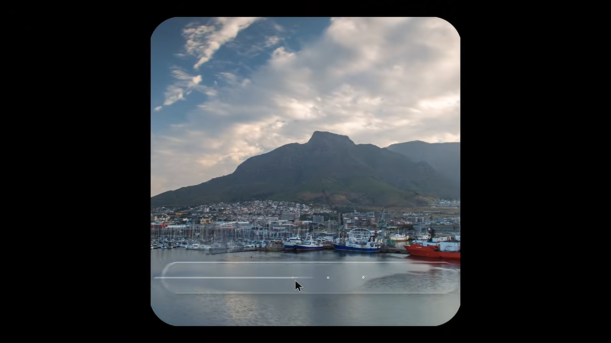
조금 뒤에는 액자 상품 페이지가 나와요. 'FRAMED PRINT · Morning mist · €129' 아래에서 액자 색을 고르면, 'Printing 100%' 진행 바가 차오르는 식이에요. 실제 쇼핑 앱의 한 장면처럼 보여요.
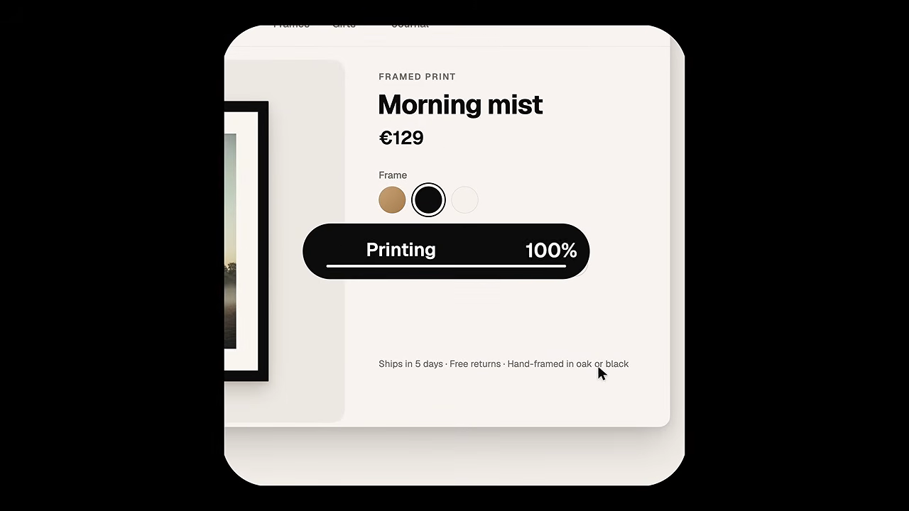
마지막 부분에서는 Slowlife 워드마크 뒤로 사진 12장이 격자로 펼쳐져요. 발표자는 이번 결과물의 완성도가 정말 높다고 평가해요. 코드로 만들었다고는 생각하기 어렵고, 다른 도구를 연결한 것도 아니라는 거예요.
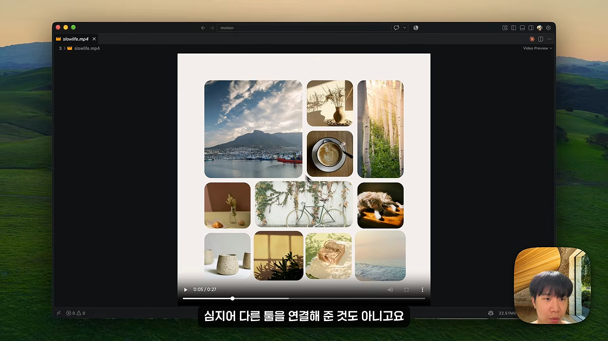
재료만 바꾼 내 채널 영상, 그리고 결론
마지막으로 발표자는 앞에서 쓴 프롬프트를 응용해 자기 채널의 브랜드 영상을 만들어요. 프롬프트 구조는 그대로 두고, 내용만 자기 채널 이야기로 바꿨어요.
재료만 갈아 끼웠어요
아래 설명 그림에서 왼쪽이 고친 <inputs> 부분이에요. 검게 칠한 세 줄이 바꾼 곳이에요. 워드마크는 'Jay Choi'로, 사진은 유튜버이자 인디 개발자로 일하는 모습(책상, 촬영, 화면 캡처, 썸네일)과 채널 페이지로, 영상은 책상에서 일하는 클립으로 바꿨어요. 음악 줄은 앞과 같은 120 BPM 무료 곡 그대로예요.
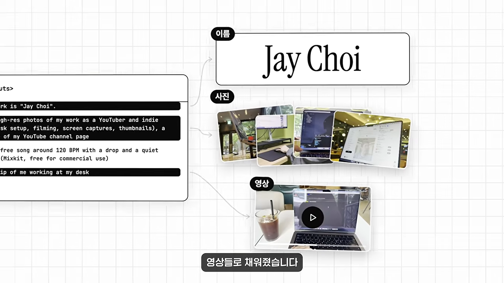
완성 영상에는 발표자가 넣은 실제 촬영분이 둥근 정사각형 프레임 안에 들어가요. 카페 창가에서 노트북으로 작업하는 장면이에요.
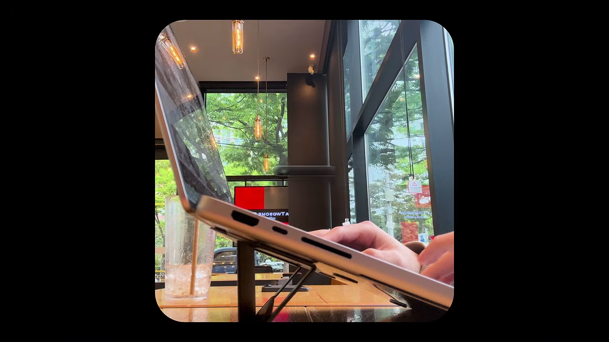
구조만 잘 잡혀 있으면 그 안의 재료와 내용만 바꿔서 나만의 영상을 얼마든지 만들 수 있다는 게 이 장면의 결론이에요.
판단은 여전히 사람이 해요
발표자는 마지막에 이 실험을 이렇게 정리해요. 프롬프트를 붙여 넣었을 뿐이지만, 그 안에 든 판단은 세 가지였어요. 아래 그림의 '01 장면', '02 박자', '03 금지 효과'예요. 어떤 장면을 넣을지, 박자마다 무엇이 일어나야 하는지, 어떤 효과를 금지할지는 모션 디자인을 제대로 알아야 내릴 수 있는 판단이에요. 클로드는 그 판단을 화면으로 옮겨 줄 뿐이에요.
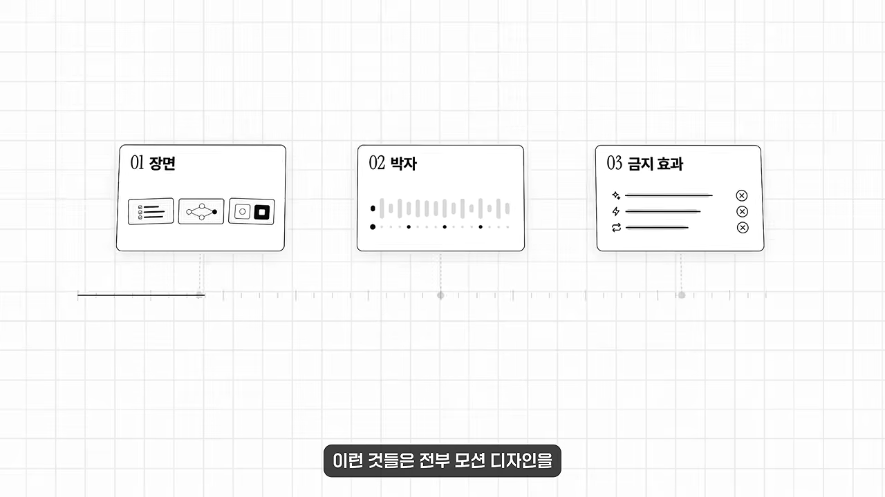
저는 이게 모션 디자인을 대체한다기보다 도구를 다루는 문턱이 낮아진 것일 뿐이라 생각합니다.
— 영상 07:08
예전에는 머릿속에 좋은 그림이 있어도 만들 줄 몰라서 포기했다면, 이제는 그 그림을 하나씩 설명할 수만 있으면 돼요. 발표자는 한 문장 프롬프트로 가볍게 시작하고, 제대로 된 영상이 필요하면 구조화된 프롬프트를 원하는 방향으로 고쳐 보라고 권해요. 영상에서 쓴 프롬프트들은 X에 공개된 오픈소스 템플릿이에요. 발표자는 영상 설명란에 링크를 올려 두겠다고 했어요.